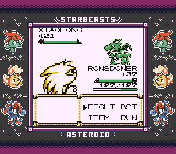
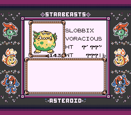
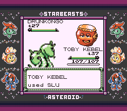

Our journey towards Fuschia City wound up being quite eventful, although it
didn't start that way. The bridge with the Fishermen is about the same as it
always was, although fighting them has really drawn attention to the fact
that Sillish is the only actual fish in the game. After getting the Super
Rod I was able to confirm, most of what I found while fishing were coffee
monsters, clams, and.. water spirits? Whatever Splashee is supposed to be.
One of the fishermen did have one new interesting Beast though: Judging by
the name showing up as a Game Corner prize and it looking very Dragon-like,
I'd wager good money that this is our Dragonite expy.

he desperately wanted to live, but he threw the watermelon that was
worth tens of millions of yuan into niqiu's plate. let niqiu eat crazily
and do nothing! even the villagers thought the man was stupid, i don't
know if it's such a crazy behavior, but it made him earn hundreds of
millions. it turned out that niqiu was born with a smell of mud, and the
sweetness of the watermelon can be combined with it. he transferred the
full niqiu to a big pot first, then he sprinked chicken feet on niqiu.
under the stimulation of salt, niqiu's pain exploded in an instant, and
he kept secreting mud from his body, but at this time the man didn't
feel cool enough: he put on gloves and rubbed niqiu hard like rubbing
clothes until niqiu was rub so hard that the skin of the niqiu was thin.
he poured all the niqiu into the cleaner, add a caddy of flour and a
little baking soda. under the merciless stirring of the machine, all the
mucus in niqiu's body was washed out. this is the cleanest time since
niqiu was born. the worker's aunt cleaned niqiu's internal organs by
hand. after cleaning again, it can be fried directly in the oil pan
until the five sides are golden. friends who have eaten niqiu know niqiu
contains a variety of proteins needed by the human body. it has always
been loved by male friends. as the saying goes, "it's better to eat
niqiu on the ground then to eat it in the sky".
Slobbix is blocking our path to proceed further, but luckily we have a Beast
Flute to wake it up. After a Super Fang and a Hurricane from Rowsdower and a
Thunder Wave from Tubi put it into perfect capture range, we catch the big
man in our first ball.

"It leaves its swampy homeland only to consume filth and trash left
behind by civilization."
While I fight through more repetitive fishermen, I get a chance to use
Sludge Bomb on Toby Kebel and admire its animation. Something I really
admire about this game is its attention to detail on little elements of
presentation like this. I think a lot of ROM hackers would've just given it
the animation of Sludge and called that good enough (I've seen a lot of
reused animations in other hacks), but this team put in the effort to give
these moves unique animation, to the extent that if I didn't know better I'd
assume Sludge Bomb was in the original game. It's great!

this animation also has the distinct benefit of not taking like 500
years to play unlike falcon punch